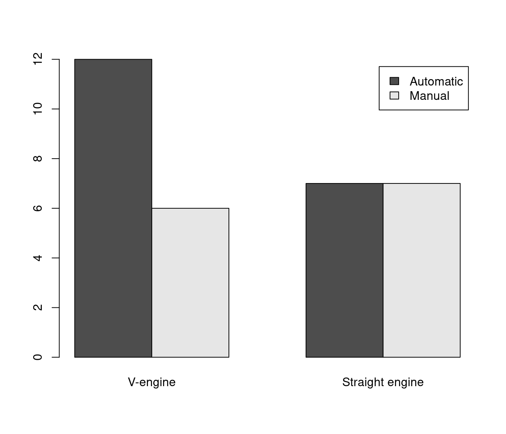
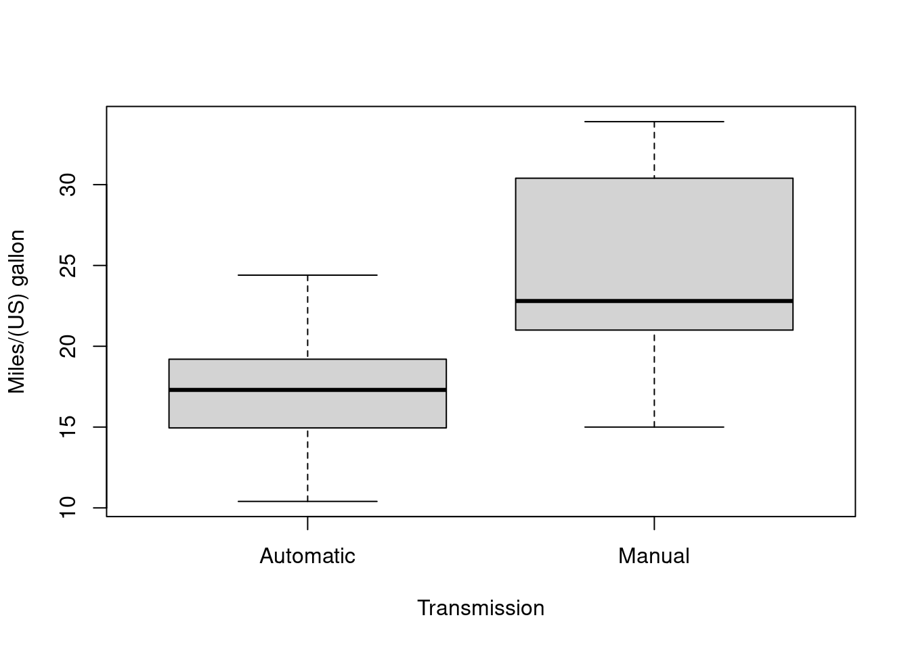

expss: Tables with Labels in R
2022-01-06

Introduction
expss computes and displays tables with support for ‘SPSS’-style labels, multiple / nested banners, weights, multiple-response variables and significance testing. There are facilities for nice output of tables in ‘knitr’, R notebooks, ‘Shiny’ and ‘Jupyter’ notebooks. Proper methods for labelled variables add value labels support to base R functions and to some functions from other packages. Additionally, the package offers useful functions for data processing in marketing research / social surveys - popular data transformation functions from ‘SPSS’ Statistics and ‘Excel’ (‘RECODE’, ‘COUNT’, ‘COUNTIF’, ‘VLOOKUP’, etc.). Package is intended to help people to move data processing from ‘Excel’/‘SPSS’ to R. See examples below. You can get help about any function by typing ?function_name in the R console.
Installation
expss is on CRAN, so for installation you can print in the console install.packages("expss").
Cross-tablulation examples
We will use for demonstartion well-known mtcars dataset. Let’s start with adding labels to the dataset. Then we can continue with tables creation.
library(expss)
data(mtcars)
mtcars = apply_labels(mtcars,
mpg = "Miles/(US) gallon",
cyl = "Number of cylinders",
disp = "Displacement (cu.in.)",
hp = "Gross horsepower",
drat = "Rear axle ratio",
wt = "Weight (1000 lbs)",
qsec = "1/4 mile time",
vs = "Engine",
vs = c("V-engine" = 0,
"Straight engine" = 1),
am = "Transmission",
am = c("Automatic" = 0,
"Manual"=1),
gear = "Number of forward gears",
carb = "Number of carburetors"
)For quick cross-tabulation there are fre and cross family of function. For simplicity we demonstrate here only cross_cpct which calculates column percent. Documentation for other functions, such as cross_cases for counts, cross_rpct for row percent, cross_tpct for table percent and cross_fun for custom summary functions can be seen by typing ?cross_cpct and ?cross_fun in the console.
# 'cross_*' examples
# just simple crosstabulation, similar to base R 'table' function
cross_cases(mtcars, am, vs)| Engine | ||
|---|---|---|
| V-engine | Straight engine | |
| Transmission | ||
| Automatic | 12 | 7 |
| Manual | 6 | 7 |
| #Total cases | 18 | 14 |
# Table column % with multiple banners
cross_cpct(mtcars, cyl, list(total(), am, vs))| #Total | Transmission | Engine | |||||
|---|---|---|---|---|---|---|---|
| Automatic | Manual | V-engine | Straight engine | ||||
| Number of cylinders | |||||||
| 4 | 34.4 | 15.8 | 61.5 | 5.6 | 71.4 | ||
| 6 | 21.9 | 21.1 | 23.1 | 16.7 | 28.6 | ||
| 8 | 43.8 | 63.2 | 15.4 | 77.8 | |||
| #Total cases | 32 | 19 | 13 | 18 | 14 | ||
# magrittr pipe usage and nested banners
mtcars %>%
cross_cpct(cyl, list(total(), am %nest% vs)) | #Total | Transmission | ||||||
|---|---|---|---|---|---|---|---|
| Automatic | Manual | ||||||
| Engine | Engine | ||||||
| V-engine | Straight engine | V-engine | Straight engine | ||||
| Number of cylinders | |||||||
| 4 | 34.4 | 42.9 | 16.7 | 100 | |||
| 6 | 21.9 | 57.1 | 50.0 | ||||
| 8 | 43.8 | 100 | 33.3 | ||||
| #Total cases | 32 | 12 | 7 | 6 | 7 | ||
We have more sophisticated interface for table construction with magrittr piping. Table construction consists of at least of three functions chained with pipe operator: %>%. At first we need to specify variables for which statistics will be computed with tab_cells. Secondary, we calculate statistics with one of the tab_stat_* functions. And last, we finalize table creation with tab_pivot, e. g.: dataset %>% tab_cells(variable) %>% tab_stat_cases() %>% tab_pivot(). After that we can optionally sort table with tab_sort_asc, drop empty rows/columns with drop_rc and transpose with tab_transpose. Resulting table is just a data.frame so we can use usual R operations on it. Detailed documentation for table creation can be seen via ?tables. For significance testing see ?significance. Generally, tables automatically translated to HTML for output in knitr or Jupyter notebooks. However, if we want HTML output in the R notebooks or in the RStudio viewer we need to set options for that: expss_output_rnotebook() or expss_output_viewer().
# simple example
mtcars %>%
tab_cells(cyl) %>%
tab_cols(total(), am) %>%
tab_stat_cpct() %>%
tab_pivot()| #Total | Transmission | |||
|---|---|---|---|---|
| Automatic | Manual | |||
| Number of cylinders | ||||
| 4 | 34.4 | 15.8 | 61.5 | |
| 6 | 21.9 | 21.1 | 23.1 | |
| 8 | 43.8 | 63.2 | 15.4 | |
| #Total cases | 32 | 19 | 13 | |
# table with caption
mtcars %>%
tab_cells(mpg, disp, hp, wt, qsec) %>%
tab_cols(total(), am) %>%
tab_stat_mean_sd_n() %>%
tab_last_sig_means(subtable_marks = "both") %>%
tab_pivot() %>%
set_caption("Table with summary statistics and significance marks.")| Table with summary statistics and significance marks. | |||||
| #Total | Transmission | ||||
|---|---|---|---|---|---|
| Automatic | Manual | ||||
| A | B | ||||
| Miles/(US) gallon | |||||
| Mean | 20.1 | 17.1 < B | 24.4 > A | ||
| Std. dev. | 6.0 | 3.8 | 6.2 | ||
| Unw. valid N | 32.0 | 19.0 | 13.0 | ||
| Displacement (cu.in.) | |||||
| Mean | 230.7 | 290.4 > B | 143.5 < A | ||
| Std. dev. | 123.9 | 110.2 | 87.2 | ||
| Unw. valid N | 32.0 | 19.0 | 13.0 | ||
| Gross horsepower | |||||
| Mean | 146.7 | 160.3 | 126.8 | ||
| Std. dev. | 68.6 | 53.9 | 84.1 | ||
| Unw. valid N | 32.0 | 19.0 | 13.0 | ||
| Weight (1000 lbs) | |||||
| Mean | 3.2 | 3.8 > B | 2.4 < A | ||
| Std. dev. | 1.0 | 0.8 | 0.6 | ||
| Unw. valid N | 32.0 | 19.0 | 13.0 | ||
| 1/4 mile time | |||||
| Mean | 17.8 | 18.2 | 17.4 | ||
| Std. dev. | 1.8 | 1.8 | 1.8 | ||
| Unw. valid N | 32.0 | 19.0 | 13.0 | ||
# Table with the same summary statistics. Statistics labels in columns.
mtcars %>%
tab_cells(mpg, disp, hp, wt, qsec) %>%
tab_cols(total(label = "#Total| |"), am) %>%
tab_stat_fun(Mean = w_mean, "Std. dev." = w_sd, "Valid N" = w_n, method = list) %>%
tab_pivot()| #Total | Transmission | ||||||||||
|---|---|---|---|---|---|---|---|---|---|---|---|
| Automatic | Manual | ||||||||||
| Mean | Std. dev. | Valid N | Mean | Std. dev. | Valid N | Mean | Std. dev. | Valid N | |||
| Miles/(US) gallon | 20.1 | 6.0 | 32 | 17.1 | 3.8 | 19 | 24.4 | 6.2 | 13 | ||
| Displacement (cu.in.) | 230.7 | 123.9 | 32 | 290.4 | 110.2 | 19 | 143.5 | 87.2 | 13 | ||
| Gross horsepower | 146.7 | 68.6 | 32 | 160.3 | 53.9 | 19 | 126.8 | 84.1 | 13 | ||
| Weight (1000 lbs) | 3.2 | 1.0 | 32 | 3.8 | 0.8 | 19 | 2.4 | 0.6 | 13 | ||
| 1/4 mile time | 17.8 | 1.8 | 32 | 18.2 | 1.8 | 19 | 17.4 | 1.8 | 13 | ||
# Different statistics for different variables.
mtcars %>%
tab_cols(total(), vs) %>%
tab_cells(mpg) %>%
tab_stat_mean() %>%
tab_stat_valid_n() %>%
tab_cells(am) %>%
tab_stat_cpct(total_row_position = "none", label = "col %") %>%
tab_stat_rpct(total_row_position = "none", label = "row %") %>%
tab_stat_tpct(total_row_position = "none", label = "table %") %>%
tab_pivot(stat_position = "inside_rows") | #Total | Engine | |||||
|---|---|---|---|---|---|---|
| V-engine | Straight engine | |||||
| Miles/(US) gallon | ||||||
| Mean | 20.1 | 16.6 | 24.6 | |||
| Valid N | 32.0 | 18.0 | 14.0 | |||
| Transmission | ||||||
| Automatic | col % | 59.4 | 66.7 | 50.0 | ||
| row % | 100.0 | 63.2 | 36.8 | |||
| table % | 59.4 | 37.5 | 21.9 | |||
| Manual | col % | 40.6 | 33.3 | 50.0 | ||
| row % | 100.0 | 46.2 | 53.8 | |||
| table % | 40.6 | 18.8 | 21.9 | |||
# Table with split by rows and with custom totals.
mtcars %>%
tab_cells(cyl) %>%
tab_cols(total(), vs) %>%
tab_rows(am) %>%
tab_stat_cpct(total_row_position = "above",
total_label = c("number of cases", "row %"),
total_statistic = c("u_cases", "u_rpct")) %>%
tab_pivot()| #Total | Engine | ||||||
|---|---|---|---|---|---|---|---|
| V-engine | Straight engine | ||||||
| Transmission | |||||||
| Automatic | Number of cylinders | #number of cases | 19 | 12 | 7 | ||
| #row % | 100 | 63.2 | 36.8 | ||||
| 4 | 15.8 | 42.9 | |||||
| 6 | 21.1 | 57.1 | |||||
| 8 | 63.2 | 100.0 | |||||
| Manual | Number of cylinders | #number of cases | 13 | 6 | 7 | ||
| #row % | 100 | 46.2 | 53.8 | ||||
| 4 | 61.5 | 16.7 | 100.0 | ||||
| 6 | 23.1 | 50.0 | |||||
| 8 | 15.4 | 33.3 | |||||
# Linear regression by groups.
mtcars %>%
tab_cells(sheet(mpg, disp, hp, wt, qsec)) %>%
tab_cols(total(label = "#Total| |"), am) %>%
tab_stat_fun_df(
function(x){
frm = reformulate(".", response = as.name(names(x)[1]))
model = lm(frm, data = x)
sheet('Coef.' = coef(model),
confint(model)
)
}
) %>%
tab_pivot() | #Total | Transmission | ||||||||||
|---|---|---|---|---|---|---|---|---|---|---|---|
| Automatic | Manual | ||||||||||
| Coef. | 2.5 % | 97.5 % | Coef. | 2.5 % | 97.5 % | Coef. | 2.5 % | 97.5 % | |||
| (Intercept) | 27.3 | 9.6 | 45.1 | 21.8 | -1.9 | 45.5 | 13.3 | -21.9 | 48.4 | ||
Displacement (cu.in.)
|
0.0 | 0.0 | 0.0 | 0.0 | 0.0 | 0.0 | 0.0 | -0.1 | 0.1 | ||
Gross horsepower
|
0.0 | -0.1 | 0.0 | 0.0 | -0.1 | 0.0 | 0.0 | 0.0 | 0.1 | ||
Weight (1000 lbs)
|
-4.6 | -7.2 | -2.0 | -2.3 | -5.0 | 0.4 | -7.7 | -12.5 | -2.9 | ||
1/4 mile time
|
0.5 | -0.4 | 1.5 | 0.4 | -0.7 | 1.6 | 1.6 | -0.2 | 3.4 | ||
Example of data processing with multiple-response variables
Here we use truncated dataset with data from product test of two samples of chocolate sweets. 150 respondents tested two kinds of sweets (codenames: VSX123 and SDF546). Sample was divided into two groups (cells) of 75 respondents in each group. In cell 1 product VSX123 was presented first and then SDF546. In cell 2 sweets were presented in reversed order. Questions about respondent impressions about first product are in the block A (and about second tested product in the block B). At the end of the questionnaire there was a question about the preferences between sweets.
List of variables:
idRespondent IdcellFirst tested product (cell number)s2aAgea1_1-a1_6What did you like in these sweets? Multiple response. First tested producta22Overall quality. First tested productb1_1-b1_6What did you like in these sweets? Multiple response. Second tested productb22Overall quality. Second tested productc1Preferences
data(product_test)
w = product_test # shorter name to save some keystrokes
# here we recode variables from first/second tested product to separate variables for each product according to their cells
# 'h' variables - VSX123 sample, 'p' variables - 'SDF456' sample
# also we recode preferences from first/second product to true names
# for first cell there are no changes, for second cell we should exchange 1 and 2.
w = w %>%
let_if(cell == 1,
h1_1 %to% h1_6 := recode(a1_1 %to% a1_6, other ~ copy),
p1_1 %to% p1_6 := recode(b1_1 %to% b1_6, other ~ copy),
h22 := recode(a22, other ~ copy),
p22 := recode(b22, other ~ copy),
c1r = c1
) %>%
let_if(cell == 2,
p1_1 %to% p1_6 := recode(a1_1 %to% a1_6, other ~ copy),
h1_1 %to% h1_6 := recode(b1_1 %to% b1_6, other ~ copy),
p22 := recode(a22, other ~ copy),
h22 := recode(b22, other ~ copy),
c1r := recode(c1, 1 ~ 2, 2 ~ 1, other ~ copy)
) %>%
let(
# recode age by groups
age_cat = recode(s2a, lo %thru% 25 ~ 1, lo %thru% hi ~ 2),
# count number of likes
# codes 2 and 99 are ignored.
h_likes = count_row_if(1 | 3 %thru% 98, h1_1 %to% h1_6),
p_likes = count_row_if(1 | 3 %thru% 98, p1_1 %to% p1_6)
)
# here we prepare labels for future usage
codeframe_likes = num_lab("
1 Liked everything
2 Disliked everything
3 Chocolate
4 Appearance
5 Taste
6 Stuffing
7 Nuts
8 Consistency
98 Other
99 Hard to answer
")
overall_liking_scale = num_lab("
1 Extremely poor
2 Very poor
3 Quite poor
4 Neither good, nor poor
5 Quite good
6 Very good
7 Excellent
")
w = apply_labels(w,
c1r = "Preferences",
c1r = num_lab("
1 VSX123
2 SDF456
3 Hard to say
"),
age_cat = "Age",
age_cat = c("18 - 25" = 1, "26 - 35" = 2),
h1_1 = "Likes. VSX123",
p1_1 = "Likes. SDF456",
h1_1 = codeframe_likes,
p1_1 = codeframe_likes,
h_likes = "Number of likes. VSX123",
p_likes = "Number of likes. SDF456",
h22 = "Overall quality. VSX123",
p22 = "Overall quality. SDF456",
h22 = overall_liking_scale,
p22 = overall_liking_scale
)Are there any significant differences between preferences? Yes, difference is significant.
# 'tab_mis_val(3)' remove 'hard to say' from vector
w %>% tab_cols(total(), age_cat) %>%
tab_cells(c1r) %>%
tab_mis_val(3) %>%
tab_stat_cases() %>%
tab_last_sig_cases() %>%
tab_pivot()| #Total | Age | |||
|---|---|---|---|---|
| 18 - 25 | 26 - 35 | |||
| Preferences | ||||
| VSX123 | 94.0 | 46.0 | 48.0 | |
| SDF456 | 50.0 | 22.0 | 28.0 | |
| Hard to say | ||||
| #Chi-squared p-value | <0.05 | (warn.) | ||
| #Total cases | 144.0 | 68.0 | 76.0 | |
Further we calculate distribution of answers in the survey questions.
# lets specify repeated parts of table creation chains
banner = w %>% tab_cols(total(), age_cat, c1r)
# column percent with significance
tab_cpct_sig = . %>% tab_stat_cpct() %>%
tab_last_sig_cpct(sig_labels = paste0("<b>",LETTERS, "</b>"))
# means with siginifcance
tab_means_sig = . %>% tab_stat_mean_sd_n(labels = c("<b><u>Mean</u></b>", "sd", "N")) %>%
tab_last_sig_means(
sig_labels = paste0("<b>",LETTERS, "</b>"),
keep = "means")
# Preferences
banner %>%
tab_cells(c1r) %>%
tab_cpct_sig() %>%
tab_pivot() | #Total | Age | Preferences | |||||||||
|---|---|---|---|---|---|---|---|---|---|---|---|
| 18 - 25 | 26 - 35 | VSX123 | SDF456 | Hard to say | |||||||
| A | B | A | B | C | |||||||
| Preferences | |||||||||||
| VSX123 | 62.7 | 65.7 | 60.0 | 100.0 | |||||||
| SDF456 | 33.3 | 31.4 | 35.0 | 100.0 | |||||||
| Hard to say | 4.0 | 2.9 | 5.0 | 100.0 | |||||||
| #Total cases | 150 | 70 | 80 | 94 | 50 | 6 | |||||
# Overall liking
banner %>%
tab_cells(h22) %>%
tab_means_sig() %>%
tab_cpct_sig() %>%
tab_cells(p22) %>%
tab_means_sig() %>%
tab_cpct_sig() %>%
tab_pivot() | #Total | Age | Preferences | |||||||||
|---|---|---|---|---|---|---|---|---|---|---|---|
| 18 - 25 | 26 - 35 | VSX123 | SDF456 | Hard to say | |||||||
| A | B | A | B | C | |||||||
| Overall quality. VSX123 | |||||||||||
| Mean | 5.5 | 5.4 | 5.6 | 5.3 | 5.8 A | 5.5 | |||||
| Extremely poor | |||||||||||
| Very poor | |||||||||||
| Quite poor | 2.0 | 2.9 | 1.2 | 3.2 | |||||||
| Neither good, nor poor | 10.7 | 11.4 | 10.0 | 14.9 B | 2.0 | 16.7 | |||||
| Quite good | 39.3 | 45.7 | 33.8 | 40.4 | 38.0 | 33.3 | |||||
| Very good | 33.3 | 24.3 | 41.2 A | 30.9 | 38.0 | 33.3 | |||||
| Excellent | 14.7 | 15.7 | 13.8 | 10.6 | 22.0 | 16.7 | |||||
| #Total cases | 150 | 70 | 80 | 94 | 50 | 6 | |||||
| Overall quality. SDF456 | |||||||||||
| Mean | 5.4 | 5.3 | 5.4 | 5.4 | 5.3 | 5.7 | |||||
| Extremely poor | |||||||||||
| Very poor | 0.7 | 1.2 | 1.1 | ||||||||
| Quite poor | 2.7 | 4.3 | 1.2 | 2.1 | 4.0 | ||||||
| Neither good, nor poor | 16.7 | 20.0 | 13.8 | 18.1 | 14.0 | 16.7 | |||||
| Quite good | 31.3 | 27.1 | 35.0 | 28.7 | 38.0 | 16.7 | |||||
| Very good | 35.3 | 35.7 | 35.0 | 35.1 | 34.0 | 50.0 | |||||
| Excellent | 13.3 | 12.9 | 13.8 | 14.9 | 10.0 | 16.7 | |||||
| #Total cases | 150 | 70 | 80 | 94 | 50 | 6 | |||||
# Likes
banner %>%
tab_cells(h_likes) %>%
tab_means_sig() %>%
tab_cells(mrset(h1_1 %to% h1_6)) %>%
tab_cpct_sig() %>%
tab_cells(p_likes) %>%
tab_means_sig() %>%
tab_cells(mrset(p1_1 %to% p1_6)) %>%
tab_cpct_sig() %>%
tab_pivot() | #Total | Age | Preferences | |||||||||
|---|---|---|---|---|---|---|---|---|---|---|---|
| 18 - 25 | 26 - 35 | VSX123 | SDF456 | Hard to say | |||||||
| A | B | A | B | C | |||||||
| Number of likes. VSX123 | |||||||||||
| Mean | 2.0 | 2.0 | 2.1 | 1.9 | 2.2 | 2.3 | |||||
| Likes. VSX123 | |||||||||||
| Liked everything | |||||||||||
| Disliked everything | 3.3 | 1.4 | 5.0 | 4.3 | 2.0 | ||||||
| Chocolate | 34.0 | 38.6 | 30.0 | 35.1 | 32.0 | 33.3 | |||||
| Appearance | 29.3 | 21.4 | 36.2 A | 25.5 | 38.0 | 16.7 | |||||
| Taste | 32.0 | 38.6 | 26.2 | 23.4 | 48.0 A | 33.3 | |||||
| Stuffing | 27.3 | 20.0 | 33.8 | 28.7 | 26.0 | 16.7 | |||||
| Nuts | 66.7 | 72.9 | 61.3 | 69.1 | 60.0 | 83.3 | |||||
| Consistency | 12.0 | 4.3 | 18.8 A | 8.5 | 14.0 | 50.0 A B | |||||
| Other | |||||||||||
| Hard to answer | |||||||||||
| #Total cases | 150 | 70 | 80 | 94 | 50 | 6 | |||||
| Number of likes. SDF456 | |||||||||||
| Mean | 2.0 | 2.0 | 2.1 | 2.0 | 2.0 | 2.0 | |||||
| Likes. SDF456 | |||||||||||
| Liked everything | |||||||||||
| Disliked everything | 1.3 | 1.4 | 1.2 | 2.1 | |||||||
| Chocolate | 32.0 | 27.1 | 36.2 | 29.8 | 34.0 | 50.0 | |||||
| Appearance | 32.0 | 35.7 | 28.7 | 34.0 | 30.0 | 16.7 | |||||
| Taste | 39.3 | 42.9 | 36.2 | 36.2 | 44.0 | 50.0 | |||||
| Stuffing | 27.3 | 24.3 | 30.0 | 31.9 | 20.0 | 16.7 | |||||
| Nuts | 61.3 | 60.0 | 62.5 | 58.5 | 68.0 | 50.0 | |||||
| Consistency | 10.0 | 5.7 | 13.8 | 11.7 | 6.0 | 16.7 | |||||
| Other | 0.7 | 1.2 | 1.1 | ||||||||
| Hard to answer | |||||||||||
| #Total cases | 150 | 70 | 80 | 94 | 50 | 6 | |||||
# below more complicated table where we compare likes side by side
# Likes - side by side comparison
w %>%
tab_cols(total(label = "#Total| |"), c1r) %>%
tab_cells(list(unvr(mrset(h1_1 %to% h1_6)))) %>%
tab_stat_cpct(label = var_lab(h1_1)) %>%
tab_cells(list(unvr(mrset(p1_1 %to% p1_6)))) %>%
tab_stat_cpct(label = var_lab(p1_1)) %>%
tab_pivot(stat_position = "inside_columns") | #Total | Preferences | ||||||||||
|---|---|---|---|---|---|---|---|---|---|---|---|
| VSX123 | SDF456 | Hard to say | |||||||||
| Likes. VSX123 | Likes. SDF456 | Likes. VSX123 | Likes. SDF456 | Likes. VSX123 | Likes. SDF456 | Likes. VSX123 | Likes. SDF456 | ||||
| Liked everything | |||||||||||
| Disliked everything | 3.3 | 1.3 | 4.3 | 2.1 | 2 | ||||||
| Chocolate | 34.0 | 32.0 | 35.1 | 29.8 | 32 | 34 | 33.3 | 50.0 | |||
| Appearance | 29.3 | 32.0 | 25.5 | 34.0 | 38 | 30 | 16.7 | 16.7 | |||
| Taste | 32.0 | 39.3 | 23.4 | 36.2 | 48 | 44 | 33.3 | 50.0 | |||
| Stuffing | 27.3 | 27.3 | 28.7 | 31.9 | 26 | 20 | 16.7 | 16.7 | |||
| Nuts | 66.7 | 61.3 | 69.1 | 58.5 | 60 | 68 | 83.3 | 50.0 | |||
| Consistency | 12.0 | 10.0 | 8.5 | 11.7 | 14 | 6 | 50.0 | 16.7 | |||
| Other | 0.7 | 1.1 | |||||||||
| Hard to answer | |||||||||||
| #Total cases | 150 | 150 | 94 | 94 | 50 | 50 | 6 | 6 | |||
We can save labelled dataset as *.csv file with accompanying R code for labelling.
write_labelled_csv(w, file filename = "product_test.csv")Or, we can save dataset as *.csv file with SPSS syntax to read data and apply labels.
write_labelled_spss(w, file filename = "product_test.csv")Export to Microsoft Excel
To export expss tables to *.xlsx you need to install excellent openxlsx package. To install it just type in the console install.packages("openxlsx").
Examples
First we apply labels on the mtcars dataset and build simple table with caption.
library(expss)
library(openxlsx)
data(mtcars)
mtcars = apply_labels(mtcars,
mpg = "Miles/(US) gallon",
cyl = "Number of cylinders",
disp = "Displacement (cu.in.)",
hp = "Gross horsepower",
drat = "Rear axle ratio",
wt = "Weight (lb/1000)",
qsec = "1/4 mile time",
vs = "Engine",
vs = c("V-engine" = 0,
"Straight engine" = 1),
am = "Transmission",
am = c("Automatic" = 0,
"Manual"=1),
gear = "Number of forward gears",
carb = "Number of carburetors"
)
mtcars_table = mtcars %>%
cross_cpct(
cell_vars = list(cyl, gear),
col_vars = list(total(), am, vs)
) %>%
set_caption("Table 1")
mtcars_table| Table 1 | |||||||
| #Total | Transmission | Engine | |||||
|---|---|---|---|---|---|---|---|
| Automatic | Manual | V-engine | Straight engine | ||||
| Number of cylinders | |||||||
| 4 | 34.4 | 15.8 | 61.5 | 5.6 | 71.4 | ||
| 6 | 21.9 | 21.1 | 23.1 | 16.7 | 28.6 | ||
| 8 | 43.8 | 63.2 | 15.4 | 77.8 | |||
| #Total cases | 32 | 19 | 13 | 18 | 14 | ||
| Number of forward gears | |||||||
| 3 | 46.9 | 78.9 | 66.7 | 21.4 | |||
| 4 | 37.5 | 21.1 | 61.5 | 11.1 | 71.4 | ||
| 5 | 15.6 | 38.5 | 22.2 | 7.1 | |||
| #Total cases | 32 | 19 | 13 | 18 | 14 | ||
Then we create workbook and add worksheet to it.
wb = createWorkbook()
sh = addWorksheet(wb, "Tables")Export - we should specify workbook and worksheet.
xl_write(mtcars_table, wb, sh)And, finally, we save workbook with table to the xlsx file.
saveWorkbook(wb, "table1.xlsx", overwrite = TRUE)Screenshot of the exported table: 
Automation of the report generation
First of all, we create banner which we will use for all our tables.
banner = with(mtcars, list(total(), am, vs))Then we generate list with all tables. If variables have small number of discrete values we create column percent table. In other cases we calculate table with means. For both types of tables we mark significant differencies between groups.
list_of_tables = lapply(mtcars, function(variable) {
if(length(unique(variable))<7){
cro_cpct(variable, banner) %>% significance_cpct()
} else {
# if number of unique values greater than seven we calculate mean
cro_mean_sd_n(variable, banner) %>% significance_means()
}
})Create workbook:
wb = createWorkbook()
sh = addWorksheet(wb, "Tables")Here we export our list with tables with additional formatting. We remove ‘#’ sign from totals and mark total column with bold. You can read about formatting options in the manual fro xl_write (?xl_write in the console).
xl_write(list_of_tables, wb, sh,
# remove '#' sign from totals
col_symbols_to_remove = "#",
row_symbols_to_remove = "#",
# format total column as bold
other_col_labels_formats = list("#" = createStyle(textDecoration = "bold")),
other_cols_formats = list("#" = createStyle(textDecoration = "bold")),
)Save workbook:
saveWorkbook(wb, "report.xlsx", overwrite = TRUE)Screenshot of the generated report: 
Labels support for base R
Variable label is human readable description of the variable. R supports rather long variable names and these names can contain even spaces and punctuation but short variables names make coding easier. Variable label can give a nice, long description of variable. With this description it is easier to remember what those variable names refer to. Value labels are similar to variable labels, but value labels are descriptions of the values a variable can take. Labeling values means we don’t have to remember if 1=Extremely poor and 7=Excellent or vice-versa. We can easily get dataset description and variables summary with info function.
The usual way to connect numeric data to labels in R is factor variables. However, factors miss important features which the value labels provide. Factors only allow for integers to be mapped to a text label, these integers have to be a count starting at 1 and every value need to be labelled. Also, we can’t calculate means or other numeric statistics on factors.
With labels we can manipulate short variable names and codes when we analyze our data but in the resulting tables and graphs we will see human-readable text.
It is easy to store labels as variable attributes in R but most R functions cannot use them or even drop them. expss package integrates value labels support into base R functions and into functions from other packages. Every function which internally converts variable to factor will utilize labels. Labels will be preserved during variables subsetting and concatenation. Additionally, there is a function (use_labels) which greatly simplify variable labels usage. See examples below.
Getting and setting variable and value labels
First, apply value and variables labels to dataset:
library(expss)
data(mtcars)
mtcars = apply_labels(mtcars,
mpg = "Miles/(US) gallon",
cyl = "Number of cylinders",
disp = "Displacement (cu.in.)",
hp = "Gross horsepower",
drat = "Rear axle ratio",
wt = "Weight (1000 lbs)",
qsec = "1/4 mile time",
vs = "Engine",
vs = c("V-engine" = 0,
"Straight engine" = 1),
am = "Transmission",
am = c("Automatic" = 0,
"Manual"=1),
gear = "Number of forward gears",
carb = "Number of carburetors"
)In addition to apply_labels we have SPSS-style var_lab and val_lab functions:
nps = c(-1, 0, 1, 1, 0, 1, 1, -1)
var_lab(nps) = "Net promoter score"
val_lab(nps) = num_lab("
-1 Detractors
0 Neutralists
1 Promoters
")We can read, add or remove existing labels:
var_lab(nps) # get variable label## [1] "Net promoter score"val_lab(nps) # get value labels## Detractors Neutralists Promoters
## -1 0 1# add new labels
add_val_lab(nps) = num_lab("
98 Other
99 Hard to say
")
# remove label by value
# %d% - diff, %n_d% - names diff
val_lab(nps) = val_lab(nps) %d% 98
# or, remove value by name
val_lab(nps) = val_lab(nps) %n_d% "Other"Additionaly, there are some utility functions. They can applied on one variable as well as on the entire dataset.
drop_val_labs(nps)## LABEL: Net promoter score
## VALUES:
## -1, 0, 1, 1, 0, 1, 1, -1drop_var_labs(nps)## VALUES:
## -1, 0, 1, 1, 0, 1, 1, -1
## VALUE LABELS:
## -1 Detractors
## 0 Neutralists
## 1 Promoters
## 99 Hard to sayunlab(nps)## [1] -1 0 1 1 0 1 1 -1drop_unused_labels(nps)## LABEL: Net promoter score
## VALUES:
## -1, 0, 1, 1, 0, 1, 1, -1
## VALUE LABELS:
## -1 Detractors
## 0 Neutralists
## 1 Promotersprepend_values(nps)## LABEL: Net promoter score
## VALUES:
## -1, 0, 1, 1, 0, 1, 1, -1
## VALUE LABELS:
## -1 -1 Detractors
## 0 0 Neutralists
## 1 1 Promoters
## 99 99 Hard to sayThere is also prepend_names function but it can be applied only to data.frame.
Labels with base R and ggplot2 functions
Base table and plotting with value labels:
with(mtcars, table(am, vs))## vs
## am V-engine Straight engine
## Automatic 12 7
## Manual 6 7with(mtcars,
barplot(
table(am, vs),
beside = TRUE,
legend = TRUE)
)
There is a special function for variables labels support - use_labels. By now variables labels support available only for expression which will be evaluated inside data.frame.
# table with dimension names
use_labels(mtcars, table(am, vs)) ## Engine
## Transmission V-engine Straight engine
## Automatic 12 7
## Manual 6 7# linear regression
use_labels(mtcars, lm(mpg ~ wt + hp + qsec)) %>% summary##
## Call:
## lm(formula = `Miles/(US) gallon` ~ `Weight (1000 lbs)` + `Gross horsepower` +
## `1/4 mile time`)
##
## Residuals:
## LABEL: Miles/(US) gallon
## VALUES:
## -3.8591, -1.6418, -0.4636, 1.194, 5.6092
##
## Coefficients:
## Estimate Std. Error t value Pr(>|t|)
## (Intercept) 27.61053 8.41993 3.279 0.00278 **
## `Weight (1000 lbs)` -4.35880 0.75270 -5.791 3.22e-06 ***
## `Gross horsepower` -0.01782 0.01498 -1.190 0.24418
## `1/4 mile time` 0.51083 0.43922 1.163 0.25463
## ---
## Signif. codes: 0 '***' 0.001 '**' 0.01 '*' 0.05 '.' 0.1 ' ' 1
##
## Residual standard error: 2.578 on 28 degrees of freedom
## Multiple R-squared: 0.8348, Adjusted R-squared: 0.8171
## F-statistic: 47.15 on 3 and 28 DF, p-value: 4.506e-11# boxplot with variable labels
use_labels(mtcars, boxplot(mpg ~ am))
And, finally, ggplot2 graphics with variables and value labels. Note that with ggplot2 version 3.2.0 and higher you need to explicitly convert labelled variables to factors in the facet_grid formula:
library(ggplot2, warn.conflicts = FALSE)
use_labels(mtcars, {
# '..data' is shortcut for all 'mtcars' data.frame inside expression
ggplot(..data) +
geom_point(aes(y = mpg, x = wt, color = qsec)) +
facet_grid(factor(am) ~ factor(vs))
}) Extreme value labels support
We have an option for extreme values lables support: expss_enable_value_labels_support_extreme(). With this option factor/as.factor will take into account empty levels. However, unique will give weird result for labelled variables: labels without values will be added to unique values. That’s why it is recommended to turn off this option immediately after usage. See examples.
We have label ‘Hard to say’ for which there are no values in nps:
nps = c(-1, 0, 1, 1, 0, 1, 1, -1)
var_lab(nps) = "Net promoter score"
val_lab(nps) = num_lab("
-1 Detractors
0 Neutralists
1 Promoters
99 Hard to say
")Here we disable labels support and get results without labels:
expss_disable_value_labels_support()
table(nps) # there is no labels in the result## nps
## -1 0 1
## 2 2 4unique(nps)## [1] -1 0 1Results with default value labels support - three labels are here but “Hard to say” is absent.
expss_enable_value_labels_support()
# table with labels but there are no label "Hard to say"
table(nps)## nps
## Detractors Neutralists Promoters
## 2 2 4unique(nps)## LABEL: Net promoter score
## VALUES:
## -1, 0, 1
## VALUE LABELS:
## -1 Detractors
## 0 Neutralists
## 1 Promoters
## 99 Hard to sayAnd now extreme value labels support - we see “Hard to say” with zero counts. Note the weird unique result.
expss_enable_value_labels_support_extreme()
# now we see "Hard to say" with zero counts
table(nps) ## nps
## Detractors Neutralists Promoters Hard to say
## 2 2 4 0# weird 'unique'! There is a value 99 which is absent in 'nps'
unique(nps) ## LABEL: Net promoter score
## VALUES:
## -1, 0, 1, 99
## VALUE LABELS:
## -1 Detractors
## 0 Neutralists
## 1 Promoters
## 99 Hard to sayReturn immediately to defaults to avoid issues:
expss_enable_value_labels_support()Labels are preserved during common operations on the data
There are special methods for subsetting and concatenating labelled variables. These methods preserve labels during common operations. We don’t need to restore labels on subsetted or sorted data.frame.
mtcars with labels:
str(mtcars)## 'data.frame': 32 obs. of 11 variables:
## $ mpg :Class 'labelled' num 21 21 22.8 21.4 18.7 18.1 14.3 24.4 22.8 19.2 ...
## .. .. LABEL: Miles/(US) gallon
## $ cyl :Class 'labelled' num 6 6 4 6 8 6 8 4 4 6 ...
## .. .. LABEL: Number of cylinders
## $ disp:Class 'labelled' num 160 160 108 258 360 ...
## .. .. LABEL: Displacement (cu.in.)
## $ hp :Class 'labelled' num 110 110 93 110 175 105 245 62 95 123 ...
## .. .. LABEL: Gross horsepower
## $ drat:Class 'labelled' num 3.9 3.9 3.85 3.08 3.15 2.76 3.21 3.69 3.92 3.92 ...
## .. .. LABEL: Rear axle ratio
## $ wt :Class 'labelled' num 2.62 2.88 2.32 3.21 3.44 ...
## .. .. LABEL: Weight (1000 lbs)
## $ qsec:Class 'labelled' num 16.5 17 18.6 19.4 17 ...
## .. .. LABEL: 1/4 mile time
## $ vs :Class 'labelled' num 0 0 1 1 0 1 0 1 1 1 ...
## .. .. LABEL: Engine
## .. .. VALUE LABELS [1:2]: 0=V-engine, 1=Straight engine
## $ am :Class 'labelled' num 1 1 1 0 0 0 0 0 0 0 ...
## .. .. LABEL: Transmission
## .. .. VALUE LABELS [1:2]: 0=Automatic, 1=Manual
## $ gear:Class 'labelled' num 4 4 4 3 3 3 3 4 4 4 ...
## .. .. LABEL: Number of forward gears
## $ carb:Class 'labelled' num 4 4 1 1 2 1 4 2 2 4 ...
## .. .. LABEL: Number of carburetorsMake subset of the data.frame:
mtcars_subset = mtcars[1:10, ]Labels are here, nothing is lost:
str(mtcars_subset)## 'data.frame': 10 obs. of 11 variables:
## $ mpg :Class 'labelled' num 21 21 22.8 21.4 18.7 18.1 14.3 24.4 22.8 19.2
## .. .. LABEL: Miles/(US) gallon
## $ cyl :Class 'labelled' num 6 6 4 6 8 6 8 4 4 6
## .. .. LABEL: Number of cylinders
## $ disp:Class 'labelled' num 160 160 108 258 360 ...
## .. .. LABEL: Displacement (cu.in.)
## $ hp :Class 'labelled' num 110 110 93 110 175 105 245 62 95 123
## .. .. LABEL: Gross horsepower
## $ drat:Class 'labelled' num 3.9 3.9 3.85 3.08 3.15 2.76 3.21 3.69 3.92 3.92
## .. .. LABEL: Rear axle ratio
## $ wt :Class 'labelled' num 2.62 2.88 2.32 3.21 3.44 ...
## .. .. LABEL: Weight (1000 lbs)
## $ qsec:Class 'labelled' num 16.5 17 18.6 19.4 17 ...
## .. .. LABEL: 1/4 mile time
## $ vs :Class 'labelled' num 0 0 1 1 0 1 0 1 1 1
## .. .. LABEL: Engine
## .. .. VALUE LABELS [1:2]: 0=V-engine, 1=Straight engine
## $ am :Class 'labelled' num 1 1 1 0 0 0 0 0 0 0
## .. .. LABEL: Transmission
## .. .. VALUE LABELS [1:2]: 0=Automatic, 1=Manual
## $ gear:Class 'labelled' num 4 4 4 3 3 3 3 4 4 4
## .. .. LABEL: Number of forward gears
## $ carb:Class 'labelled' num 4 4 1 1 2 1 4 2 2 4
## .. .. LABEL: Number of carburetorsInteraction with ‘haven’
To use expss with haven you need to load expss strictly after haven (or other package with implemented ‘labelled’ class) to avoid conflicts. And it is better to use read_spss with explict package specification: haven::read_spss. See example below. haven package doesn’t set ‘labelled’ class for variables which have variable label but don’t have value labels. It leads to labels losing during subsetting and other operations. We have a special function to fix this: add_labelled_class. Apply it to dataset loaded by haven.
# we need to load packages strictly in this order to avoid conflicts
library(haven)
library(expss)
spss_data = haven::read_spss("spss_file.sav")
# add missing 'labelled' class
spss_data = add_labelled_class(spss_data) More table examples
First, we apply labels on the well-known mtcars dataset:
library(expss)
data(mtcars)
mtcars = apply_labels(mtcars,
mpg = "Miles/(US) gallon",
cyl = "Number of cylinders",
disp = "Displacement (cu.in.)",
hp = "Gross horsepower",
drat = "Rear axle ratio",
wt = "Weight (1000 lbs)",
qsec = "1/4 mile time",
vs = "Engine",
vs = c("V-engine" = 0,
"Straight engine" = 1),
am = "Transmission",
am = c("Automatic" = 0,
"Manual"=1),
gear = "Number of forward gears",
carb = "Number of carburetors"
)Table construction consists of at least of three functions chained with magrittr pipe operator: %>%. At first we need to specify variables for which statistics will be computed with tab_cells. Secondary, we calculate statistics with one of tab_stat_* functions. And last, we finalize table creation with tab_pivot: dataset %>% tab_cells(variable) %>% tab_stat_cases() %>% tab_pivot(). We can split our statistics by columns with tab_cols or by rows with tab_rows. After that we can sort table with tab_sort_asc, drop empty rows/columns with drop_rc and transpose with tab_transpose. Generally, resulting table is just a data.frame so we can use arbitrary operations on it. Statistic is always calculated on the last cells, column/row variables, weight, missing values and subgroup. To define new cell/column/row variables we can call appropriate function one more time. tab_pivot defines how we combine different statistics and where statistic labels will appear - inside/outside rows/columns.
Simple column percent
mtcars %>%
tab_cells(cyl) %>%
tab_cols(vs) %>%
tab_stat_cpct() %>%
tab_pivot() %>%
tab_caption("Simple column percent")| Simple column percent | ||
| Engine | ||
|---|---|---|
| V-engine | Straight engine | |
| Number of cylinders | ||
| 4 | 5.6 | 71.4 |
| 6 | 16.7 | 28.6 |
| 8 | 77.8 | |
| #Total cases | 18 | 14 |
Split by columns and rows
mtcars %>%
tab_cells(cyl) %>%
tab_cols(vs) %>%
tab_rows(am) %>%
tab_stat_cpct() %>%
tab_pivot() %>%
tab_caption("Split by columns and rows")| Split by columns and rows | |||||
| Engine | |||||
|---|---|---|---|---|---|
| V-engine | Straight engine | ||||
| Transmission | |||||
| Automatic | Number of cylinders | 4 | 42.9 | ||
| 6 | 57.1 | ||||
| 8 | 100.0 | ||||
| #Total cases | 12 | 7 | |||
| Manual | Number of cylinders | 4 | 16.7 | 100.0 | |
| 6 | 50.0 | ||||
| 8 | 33.3 | ||||
| #Total cases | 6 | 7 | |||
Multiple variable and multiple summary statistics
mtcars %>%
tab_cells(mpg, disp, hp, wt, qsec) %>%
tab_cols(total(), am) %>%
tab_stat_fun(Mean = w_mean, "Std. dev." = w_sd, "Valid N" = w_n) %>%
tab_pivot() %>%
tab_caption("Multiple variable and multiple summary statistics")| Multiple variable and multiple summary statistics | ||||
| #Total | Transmission | |||
|---|---|---|---|---|
| Automatic | Manual | |||
| Miles/(US) gallon | ||||
| Mean | 20.1 | 17.1 | 24.4 | |
| Std. dev. | 6.0 | 3.8 | 6.2 | |
| Valid N | 32.0 | 19.0 | 13.0 | |
| Displacement (cu.in.) | ||||
| Mean | 230.7 | 290.4 | 143.5 | |
| Std. dev. | 123.9 | 110.2 | 87.2 | |
| Valid N | 32.0 | 19.0 | 13.0 | |
| Gross horsepower | ||||
| Mean | 146.7 | 160.3 | 126.8 | |
| Std. dev. | 68.6 | 53.9 | 84.1 | |
| Valid N | 32.0 | 19.0 | 13.0 | |
| Weight (1000 lbs) | ||||
| Mean | 3.2 | 3.8 | 2.4 | |
| Std. dev. | 1.0 | 0.8 | 0.6 | |
| Valid N | 32.0 | 19.0 | 13.0 | |
| 1/4 mile time | ||||
| Mean | 17.8 | 18.2 | 17.4 | |
| Std. dev. | 1.8 | 1.8 | 1.8 | |
| Valid N | 32.0 | 19.0 | 13.0 | |
Multiple variable and multiple summary statistics - statistic lables in columns
mtcars %>%
tab_cells(mpg, disp, hp, wt, qsec) %>%
tab_cols(total(), am) %>%
tab_stat_fun(Mean = w_mean, "Valid N" = w_n, method = list) %>%
tab_pivot() %>%
tab_caption("Multiple variable and multiple summary statistics - statistic lables in columns")| Multiple variable and multiple summary statistics - statistic lables in columns | |||||||||
| #Total | Transmission | ||||||||
|---|---|---|---|---|---|---|---|---|---|
| Mean | Valid N | Automatic | Manual | ||||||
| Mean | Valid N | Mean | Valid N | ||||||
| Miles/(US) gallon | 20.1 | 32 | 17.1 | 19 | 24.4 | 13 | |||
| Displacement (cu.in.) | 230.7 | 32 | 290.4 | 19 | 143.5 | 13 | |||
| Gross horsepower | 146.7 | 32 | 160.3 | 19 | 126.8 | 13 | |||
| Weight (1000 lbs) | 3.2 | 32 | 3.8 | 19 | 2.4 | 13 | |||
| 1/4 mile time | 17.8 | 32 | 18.2 | 19 | 17.4 | 13 | |||
Filter dataset and exclude empty columns
mtcars %>%
tab_subgroup(am == 0) %>%
tab_cells(cyl) %>%
tab_cols(total(), vs %nest% am) %>%
tab_stat_cpct() %>%
tab_pivot() %>%
drop_empty_columns() %>%
tab_caption("Filter dataset and exclude empty columns")| Filter dataset and exclude empty columns | |||||
| #Total | Engine | ||||
|---|---|---|---|---|---|
| V-engine | Straight engine | ||||
| Transmission | Transmission | ||||
| Automatic | Automatic | ||||
| Number of cylinders | |||||
| 4 | 15.8 | 42.9 | |||
| 6 | 21.1 | 57.1 | |||
| 8 | 63.2 | 100 | |||
| #Total cases | 19 | 12 | 7 | ||
Total at the top of the table
mtcars %>%
tab_cells(cyl) %>%
tab_cols(total(), vs) %>%
tab_rows(am) %>%
tab_stat_cpct(total_row_position = "above",
total_label = c("number of cases", "row %"),
total_statistic = c("u_cases", "u_rpct")) %>%
tab_pivot() %>%
tab_caption("Total at the top of the table")| Total at the top of the table | |||||||
| #Total | Engine | ||||||
|---|---|---|---|---|---|---|---|
| V-engine | Straight engine | ||||||
| Transmission | |||||||
| Automatic | Number of cylinders | #number of cases | 19 | 12 | 7 | ||
| #row % | 100 | 63.2 | 36.8 | ||||
| 4 | 15.8 | 42.9 | |||||
| 6 | 21.1 | 57.1 | |||||
| 8 | 63.2 | 100.0 | |||||
| Manual | Number of cylinders | #number of cases | 13 | 6 | 7 | ||
| #row % | 100 | 46.2 | 53.8 | ||||
| 4 | 61.5 | 16.7 | 100.0 | ||||
| 6 | 23.1 | 50.0 | |||||
| 8 | 15.4 | 33.3 | |||||
Three different statistics in each cell - stat. labels in rows
mtcars %>%
tab_cells(am) %>%
tab_cols(total(), vs) %>%
tab_total_row_position("none") %>%
tab_stat_cpct(label = "col %") %>%
tab_stat_rpct(label = "row %") %>%
tab_stat_tpct(label = "table %") %>%
tab_pivot(stat_position = "inside_rows") %>%
tab_caption("Three different statistics in each cell - stat. labels in rows")| Three different statistics in each cell - stat. labels in rows | ||||||
| #Total | Engine | |||||
|---|---|---|---|---|---|---|
| V-engine | Straight engine | |||||
| Transmission | ||||||
| Automatic | col % | 59.4 | 66.7 | 50.0 | ||
| row % | 100.0 | 63.2 | 36.8 | |||
| table % | 59.4 | 37.5 | 21.9 | |||
| Manual | col % | 40.6 | 33.3 | 50.0 | ||
| row % | 100.0 | 46.2 | 53.8 | |||
| table % | 40.6 | 18.8 | 21.9 | |||
Three different statistics in each cell - stat. labels in columns
mtcars %>%
tab_cells(am) %>%
tab_cols(total(), vs) %>%
tab_total_row_position("none") %>%
tab_stat_cpct(label = "col %") %>%
tab_stat_rpct(label = "row %") %>%
tab_stat_tpct(label = "table %") %>%
tab_pivot(stat_position = "inside_columns") %>%
tab_caption("Three different statistics in each cell - stat. labels in columns")| Three different statistics in each cell - stat. labels in columns | |||||||||||||
| #Total | Engine | ||||||||||||
|---|---|---|---|---|---|---|---|---|---|---|---|---|---|
| col % | row % | table % | V-engine | Straight engine | |||||||||
| col % | row % | table % | col % | row % | table % | ||||||||
| Transmission | |||||||||||||
| Automatic | 59.4 | 100 | 59.4 | 66.7 | 63.2 | 37.5 | 50 | 36.8 | 21.9 | ||||
| Manual | 40.6 | 100 | 40.6 | 33.3 | 46.2 | 18.8 | 50 | 53.8 | 21.9 | ||||
Stacked statistics
mtcars %>%
tab_cells(cyl) %>%
tab_cols(total(), am) %>%
tab_stat_mean() %>%
tab_stat_se() %>%
tab_stat_valid_n() %>%
tab_stat_cpct() %>%
tab_pivot() %>%
tab_caption("Stacked statistics")| Stacked statistics | ||||
| #Total | Transmission | |||
|---|---|---|---|---|
| Automatic | Manual | |||
| Number of cylinders | ||||
| Mean | 6.2 | 6.9 | 5.1 | |
| S. E. | 0.3 | 0.4 | 0.4 | |
| Valid N | 32.0 | 19.0 | 13.0 | |
| 4 | 34.4 | 15.8 | 61.5 | |
| 6 | 21.9 | 21.1 | 23.1 | |
| 8 | 43.8 | 63.2 | 15.4 | |
| #Total cases | 32 | 19 | 13 | |
Stacked statistics with section headings
mtcars %>%
tab_cells(cyl) %>%
tab_cols(total(), am) %>%
tab_row_label("#Summary statistics") %>%
tab_stat_mean() %>%
tab_stat_se() %>%
tab_stat_valid_n() %>%
tab_row_label("#Column percent") %>%
tab_stat_cpct() %>%
tab_pivot() %>%
tab_caption("Stacked statistics with section headings")| Stacked statistics with section headings | ||||
| #Total | Transmission | |||
|---|---|---|---|---|
| Automatic | Manual | |||
| #Summary statistics | ||||
| Number of cylinders | ||||
| Mean | 6.2 | 6.9 | 5.1 | |
| S. E. | 0.3 | 0.4 | 0.4 | |
| Valid N | 32.0 | 19.0 | 13.0 | |
| #Column percent | ||||
| Number of cylinders | ||||
| 4 | 34.4 | 15.8 | 61.5 | |
| 6 | 21.9 | 21.1 | 23.1 | |
| 8 | 43.8 | 63.2 | 15.4 | |
| #Total cases | 32 | 19 | 13 | |
Stacked statistics - different statistics for different variables
mtcars %>%
tab_cols(total(), am) %>%
tab_cells(mpg, hp, qsec) %>%
tab_stat_mean() %>%
tab_cells(cyl, carb) %>%
tab_stat_cpct() %>%
tab_pivot() %>%
tab_caption("Stacked statistics - different statistics for different variables")| Stacked statistics - different statistics for different variables | ||||
| #Total | Transmission | |||
|---|---|---|---|---|
| Automatic | Manual | |||
| Miles/(US) gallon | ||||
| Mean | 20.1 | 17.1 | 24.4 | |
| Gross horsepower | ||||
| Mean | 146.7 | 160.3 | 126.8 | |
| 1/4 mile time | ||||
| Mean | 17.8 | 18.2 | 17.4 | |
| Number of cylinders | ||||
| 4 | 34.4 | 15.8 | 61.5 | |
| 6 | 21.9 | 21.1 | 23.1 | |
| 8 | 43.8 | 63.2 | 15.4 | |
| #Total cases | 32 | 19 | 13 | |
| Number of carburetors | ||||
| 1 | 21.9 | 15.8 | 30.8 | |
| 2 | 31.2 | 31.6 | 30.8 | |
| 3 | 9.4 | 15.8 | ||
| 4 | 31.2 | 36.8 | 23.1 | |
| 6 | 3.1 | 7.7 | ||
| 8 | 3.1 | 7.7 | ||
| #Total cases | 32 | 19 | 13 | |
Linear regression by groups
mtcars %>%
tab_cells(sheet(mpg, disp, hp, wt, qsec)) %>%
tab_cols(total(), am) %>%
tab_stat_fun_df(
function(x){
frm = reformulate(".", response = as.name(names(x)[1]))
model = lm(frm, data = x)
sheet('Coef.' = coef(model),
confint(model)
)
}
) %>%
tab_pivot() %>%
tab_caption("Linear regression by groups")| Linear regression by groups | |||||||||||||
| #Total | Transmission | ||||||||||||
|---|---|---|---|---|---|---|---|---|---|---|---|---|---|
| Coef. | 2.5 % | 97.5 % | Automatic | Manual | |||||||||
| Coef. | 2.5 % | 97.5 % | Coef. | 2.5 % | 97.5 % | ||||||||
| (Intercept) | 27.3 | 9.6 | 45.1 | 21.8 | -1.9 | 45.5 | 13.3 | -21.9 | 48.4 | ||||
Displacement (cu.in.)
|
0.0 | 0.0 | 0.0 | 0.0 | 0.0 | 0.0 | 0.0 | -0.1 | 0.1 | ||||
Gross horsepower
|
0.0 | -0.1 | 0.0 | 0.0 | -0.1 | 0.0 | 0.0 | 0.0 | 0.1 | ||||
Weight (1000 lbs)
|
-4.6 | -7.2 | -2.0 | -2.3 | -5.0 | 0.4 | -7.7 | -12.5 | -2.9 | ||||
1/4 mile time
|
0.5 | -0.4 | 1.5 | 0.4 | -0.7 | 1.6 | 1.6 | -0.2 | 3.4 | ||||
Subtotals
mtcars %>%
tab_cells(mpg) %>%
tab_cols(total(), vs) %>%
tab_rows(subtotal(cyl, 1:2, 3:4, "5 and more" = 5 %thru% hi)) %>%
tab_stat_mean() %>%
tab_pivot() %>%
tab_caption("Subtotals in rows")| Subtotals in rows | |||||||
| #Total | Engine | ||||||
|---|---|---|---|---|---|---|---|
| V-engine | Straight engine | ||||||
| Number of cylinders | |||||||
| 1 | Miles/(US) gallon | Mean | |||||
| 2 | Miles/(US) gallon | Mean | |||||
| TOTAL 1/2 | Miles/(US) gallon | Mean | |||||
| 3 | Miles/(US) gallon | Mean | |||||
| 4 | Miles/(US) gallon | Mean | 26.7 | 26.0 | 26.7 | ||
| TOTAL 3/4 | Miles/(US) gallon | Mean | 26.7 | 26.0 | 26.7 | ||
| 6 | Miles/(US) gallon | Mean | 19.7 | 20.6 | 19.1 | ||
| 8 | Miles/(US) gallon | Mean | 15.1 | 15.1 | |||
| 5 and more | Miles/(US) gallon | Mean | 16.6 | 16.1 | 19.1 | ||
Subtotals at the bottom of the table
mtcars %>%
tab_cells(mpg, qsec) %>%
tab_cols(total(), vs) %>%
tab_rows(subtotal(cyl, 1:2, 3:4, "TOTAL 5 and more" = 5 %thru% hi, position = "bottom")) %>%
tab_stat_mean() %>%
tab_pivot() %>%
tab_caption("Subtotals at the bottom of the table")| Subtotals at the bottom of the table | |||||||
| #Total | Engine | ||||||
|---|---|---|---|---|---|---|---|
| V-engine | Straight engine | ||||||
| Number of cylinders | |||||||
| 1 | Miles/(US) gallon | Mean | |||||
| 1/4 mile time | Mean | ||||||
| 2 | Miles/(US) gallon | Mean | |||||
| 1/4 mile time | Mean | ||||||
| 3 | Miles/(US) gallon | Mean | |||||
| 1/4 mile time | Mean | ||||||
| 4 | Miles/(US) gallon | Mean | 26.7 | 26.0 | 26.7 | ||
| 1/4 mile time | Mean | 19.1 | 16.7 | 19.4 | |||
| 6 | Miles/(US) gallon | Mean | 19.7 | 20.6 | 19.1 | ||
| 1/4 mile time | Mean | 18.0 | 16.3 | 19.2 | |||
| 8 | Miles/(US) gallon | Mean | 15.1 | 15.1 | |||
| 1/4 mile time | Mean | 16.8 | 16.8 | ||||
| TOTAL 1/2 | Miles/(US) gallon | Mean | |||||
| 1/4 mile time | Mean | ||||||
| TOTAL 3/4 | Miles/(US) gallon | Mean | 26.7 | 26.0 | 26.7 | ||
| 1/4 mile time | Mean | 19.1 | 16.7 | 19.4 | |||
| TOTAL 5 and more | Miles/(US) gallon | Mean | 16.6 | 16.1 | 19.1 | ||
| 1/4 mile time | Mean | 17.2 | 16.7 | 19.2 | |||
Nets
Net, contrary to subtotal, remove original categories.
mtcars %>%
tab_cells(mpg) %>%
tab_cols(total(), vs) %>%
tab_rows(net(cyl, 1:2, 3:4, "NET 5 and more" = 5 %thru% hi, prefix = "NET ")) %>%
tab_stat_mean() %>%
tab_pivot() %>%
tab_caption("Nets in rows, custom prefix")| Nets in rows, custom prefix | |||||||
| #Total | Engine | ||||||
|---|---|---|---|---|---|---|---|
| V-engine | Straight engine | ||||||
| Number of cylinders | |||||||
| NET 1/2 | Miles/(US) gallon | Mean | |||||
| NET 3/4 | Miles/(US) gallon | Mean | 26.7 | 26.0 | 26.7 | ||
| NET 5 and more | Miles/(US) gallon | Mean | 16.6 | 16.1 | 19.1 | ||
Nets with complex grouping
mtcars %>%
tab_cells(net(mpg, "Low mpg" = less(mean(mpg)), "High mpg" = greater_or_equal(mean(mpg)))) %>%
tab_cols(total(), am) %>%
tab_stat_cases() %>%
tab_pivot() %>%
tab_caption("Nets with complex grouping")| Nets with complex grouping | ||||
| #Total | Transmission | |||
|---|---|---|---|---|
| Automatic | Manual | |||
| Miles/(US) gallon | ||||
| Low mpg | 18 | 15 | 3 | |
| High mpg | 14 | 4 | 10 | |
| #Total cases | 32 | 19 | 13 | |
Significance testing on column percent
Letters marks cells which are significantly greater than cells in the appropriate columns. - and + marks values which are lower/greater than values in the first column. Significance testing on column percent should be applied on the result of tab_stat_cpct with total row.
mtcars %>%
tab_cells(cyl) %>%
tab_cols(total(), vs) %>%
tab_stat_cpct() %>%
tab_pivot() %>%
significance_cpct(compare_type = c("first_column", "subtable"), sig_level = 0.05) %>%
tab_caption("Significance testing on column percent")| Significance testing on column percent | |||||
| #Total | Engine | ||||
|---|---|---|---|---|---|
| V-engine | Straight engine | ||||
| A | B | ||||
| Number of cylinders | |||||
| 4 | 34.4 | 5.6 - | 71.4 + A | ||
| 6 | 21.9 | 16.7 | 28.6 | ||
| 8 | 43.8 | 77.8 + | |||
| #Total cases | 32 | 18 | 14 | ||
Significance testing on means
Significance testing on means should be applied on the result of tab_stat_mean_sd_n.
mtcars %>%
tab_cells(mpg, disp, hp, wt, qsec) %>%
tab_cols(total(), am) %>%
tab_stat_mean_sd_n() %>%
tab_pivot() %>%
significance_means(compare_type = c("first_column", "subtable")) %>%
tab_caption("Significance testing on means")| Significance testing on means | |||||
| #Total | Transmission | ||||
|---|---|---|---|---|---|
| Automatic | Manual | ||||
| A | B | ||||
| Miles/(US) gallon | |||||
| Mean | 20.1 | 17.1 - | 24.4 + A | ||
| Std. dev. | 6.0 | 3.8 | 6.2 | ||
| Unw. valid N | 32.0 | 19.0 | 13.0 | ||
| Displacement (cu.in.) | |||||
| Mean | 230.7 | 290.4 B | 143.5 - | ||
| Std. dev. | 123.9 | 110.2 | 87.2 | ||
| Unw. valid N | 32.0 | 19.0 | 13.0 | ||
| Gross horsepower | |||||
| Mean | 146.7 | 160.3 | 126.8 | ||
| Std. dev. | 68.6 | 53.9 | 84.1 | ||
| Unw. valid N | 32.0 | 19.0 | 13.0 | ||
| Weight (1000 lbs) | |||||
| Mean | 3.2 | 3.8 + B | 2.4 - | ||
| Std. dev. | 1.0 | 0.8 | 0.6 | ||
| Unw. valid N | 32.0 | 19.0 | 13.0 | ||
| 1/4 mile time | |||||
| Mean | 17.8 | 18.2 | 17.4 | ||
| Std. dev. | 1.8 | 1.8 | 1.8 | ||
| Unw. valid N | 32.0 | 19.0 | 13.0 | ||
Multiple-response variables with weighting
Here we load data with multiple-responce questions. mrset means that we treat set of variables as multiple response varibale with category encoding. For dichotomy encoding use mdset.
data(product_test)
codeframe_likes = num_lab("
1 Liked everything
2 Disliked everything
3 Chocolate
4 Appearance
5 Taste
6 Stuffing
7 Nuts
8 Consistency
98 Other
99 Hard to answer
")
set.seed(1)
product_test = product_test %>%
let(
# recode age by groups
age_cat = recode(s2a, "18 - 25" = lo %thru% 25 ~ 1, "26 - 35" = lo %thru% hi ~ 2),
wgt = runif(.N, 0.25, 4),
wgt = wgt/sum(wgt)*.N
) %>%
apply_labels(
age_cat = "Age",
a1_1 = "Likes. VSX123",
b1_1 = "Likes. SDF456",
a1_1 = codeframe_likes,
b1_1 = codeframe_likes
)
product_test %>%
tab_cells(mrset(a1_1 %to% a1_6), mrset(b1_1 %to% b1_6)) %>%
tab_cols(total(), age_cat) %>%
tab_weight(wgt) %>%
tab_stat_cpct() %>%
tab_sort_desc() %>%
tab_pivot() %>%
tab_caption("Multiple-response variables with weighting")| Multiple-response variables with weighting | ||||
| #Total | Age | |||
|---|---|---|---|---|
| 18 - 25 | 26 - 35 | |||
| Likes. VSX123 | ||||
| Nuts | 68.0 | 82.5 | 53.7 | |
| Taste | 39.3 | 48.4 | 30.3 | |
| Chocolate | 34.5 | 31.9 | 37.0 | |
| Appearance | 33.6 | 26.7 | 40.4 | |
| Stuffing | 31.5 | 23.6 | 39.3 | |
| Consistency | 12.9 | 7.7 | 18.0 | |
| Disliked everything | 0.7 | 1.4 | ||
| Liked everything | ||||
| Other | ||||
| Hard to answer | ||||
| #Total cases | 150 | 70 | 80 | |
| Likes. SDF456 | ||||
| Nuts | 63.3 | 62.1 | 64.4 | |
| Taste | 31.6 | 35.2 | 28.0 | |
| Appearance | 30.3 | 28.8 | 31.8 | |
| Chocolate | 27.2 | 27.9 | 26.4 | |
| Stuffing | 21.5 | 14.3 | 28.7 | |
| Consistency | 8.2 | 1.7 | 14.7 | |
| Disliked everything | 2.9 | 3.3 | 2.5 | |
| Other | 1.0 | 1.9 | ||
| Liked everything | ||||
| Hard to answer | ||||
| #Total cases | 150 | 70 | 80 | |
Side-by-side variables comparison
To make side-by-side comparison we use “|” to suppress variable labels and put these labels to the statistic labels. Statistics labels we place in columns with tab_pivot.
product_test %>%
tab_cols(total(), age_cat) %>%
tab_weight(wgt) %>%
# '|' is needed to prevent automatic labels creation from argument
tab_cells("|" = unvr(mrset(a1_1 %to% a1_6))) %>%
tab_stat_cpct(label = var_lab(a1_1)) %>%
tab_cells("|" = unvr(mrset(b1_1 %to% b1_6))) %>%
tab_stat_cpct(label = var_lab(b1_1)) %>%
tab_pivot(stat_position = "inside_columns") %>%
tab_caption("Side-by-side variables comparison")| Side-by-side variables comparison | |||||||||
| #Total | Age | ||||||||
|---|---|---|---|---|---|---|---|---|---|
| Likes. VSX123 | Likes. SDF456 | 18 - 25 | 26 - 35 | ||||||
| Likes. VSX123 | Likes. SDF456 | Likes. VSX123 | Likes. SDF456 | ||||||
| Liked everything | |||||||||
| Disliked everything | 0.7 | 2.9 | 3.3 | 1.4 | 2.5 | ||||
| Chocolate | 34.5 | 27.2 | 31.9 | 27.9 | 37.0 | 26.4 | |||
| Appearance | 33.6 | 30.3 | 26.7 | 28.8 | 40.4 | 31.8 | |||
| Taste | 39.3 | 31.6 | 48.4 | 35.2 | 30.3 | 28.0 | |||
| Stuffing | 31.5 | 21.5 | 23.6 | 14.3 | 39.3 | 28.7 | |||
| Nuts | 68.0 | 63.3 | 82.5 | 62.1 | 53.7 | 64.4 | |||
| Consistency | 12.9 | 8.2 | 7.7 | 1.7 | 18.0 | 14.7 | |||
| Other | 1.0 | 1.9 | |||||||
| Hard to answer | |||||||||
| #Total cases | 150 | 150 | 70 | 70 | 80 | 80 | |||
Multiple tables in the loop with knitr
To make the task more practical we will create table with means for variables which have more than 6 unique elements. For other variables we will calculate column percent table. Note that you need to set results='asis' in the chunk options.
# here we specify dataset and banner
banner = mtcars %>%
tab_cols(total(), am)
for(each in colnames(mtcars)){
# note ..$ which is used for indirect reference to variable
# specify variable
curr_table = banner %>%
tab_cells(..$each)
# calculate statistics
if(length(unique(mtcars[[each]]))>6){
curr_table = curr_table %>%
tab_stat_mean_sd_n() %>%
tab_pivot() %>%
significance_means()
} else {
curr_table = curr_table %>%
tab_stat_cpct() %>%
tab_pivot() %>%
significance_cpct()
}
# finalize table
curr_table %>%
tab_caption("Variable name: ", each) %>%
htmlTable() %>%
print()
}| Variable name: mpg | |||||
| #Total | Transmission | ||||
|---|---|---|---|---|---|
| Automatic | Manual | ||||
| A | B | ||||
| Miles/(US) gallon | |||||
| Mean | 20.1 | 17.1 | 24.4 A | ||
| Std. dev. | 6.0 | 3.8 | 6.2 | ||
| Unw. valid N | 32.0 | 19.0 | 13.0 | ||
| Variable name: cyl | |||||
| #Total | Transmission | ||||
|---|---|---|---|---|---|
| Automatic | Manual | ||||
| A | B | ||||
| Number of cylinders | |||||
| 4 | 34.4 | 15.8 | 61.5 A | ||
| 6 | 21.9 | 21.1 | 23.1 | ||
| 8 | 43.8 | 63.2 B | 15.4 | ||
| #Total cases | 32 | 19 | 13 | ||
| Variable name: disp | |||||
| #Total | Transmission | ||||
|---|---|---|---|---|---|
| Automatic | Manual | ||||
| A | B | ||||
| Displacement (cu.in.) | |||||
| Mean | 230.7 | 290.4 B | 143.5 | ||
| Std. dev. | 123.9 | 110.2 | 87.2 | ||
| Unw. valid N | 32.0 | 19.0 | 13.0 | ||
| Variable name: hp | |||||
| #Total | Transmission | ||||
|---|---|---|---|---|---|
| Automatic | Manual | ||||
| A | B | ||||
| Gross horsepower | |||||
| Mean | 146.7 | 160.3 | 126.8 | ||
| Std. dev. | 68.6 | 53.9 | 84.1 | ||
| Unw. valid N | 32.0 | 19.0 | 13.0 | ||
| Variable name: drat | |||||
| #Total | Transmission | ||||
|---|---|---|---|---|---|
| Automatic | Manual | ||||
| A | B | ||||
| Rear axle ratio | |||||
| Mean | 3.6 | 3.3 | 4.0 A | ||
| Std. dev. | 0.5 | 0.4 | 0.4 | ||
| Unw. valid N | 32.0 | 19.0 | 13.0 | ||
| Variable name: wt | |||||
| #Total | Transmission | ||||
|---|---|---|---|---|---|
| Automatic | Manual | ||||
| A | B | ||||
| Weight (1000 lbs) | |||||
| Mean | 3.2 | 3.8 B | 2.4 | ||
| Std. dev. | 1.0 | 0.8 | 0.6 | ||
| Unw. valid N | 32.0 | 19.0 | 13.0 | ||
| Variable name: qsec | |||||
| #Total | Transmission | ||||
|---|---|---|---|---|---|
| Automatic | Manual | ||||
| A | B | ||||
| 1/4 mile time | |||||
| Mean | 17.8 | 18.2 | 17.4 | ||
| Std. dev. | 1.8 | 1.8 | 1.8 | ||
| Unw. valid N | 32.0 | 19.0 | 13.0 | ||
| Variable name: vs | |||||
| #Total | Transmission | ||||
|---|---|---|---|---|---|
| Automatic | Manual | ||||
| A | B | ||||
| Engine | |||||
| V-engine | 56.2 | 63.2 | 46.2 | ||
| Straight engine | 43.8 | 36.8 | 53.8 | ||
| #Total cases | 32 | 19 | 13 | ||
| Variable name: am | |||||
| #Total | Transmission | ||||
|---|---|---|---|---|---|
| Automatic | Manual | ||||
| A | B | ||||
| Transmission | |||||
| Automatic | 59.4 | 100.0 | |||
| Manual | 40.6 | 100.0 | |||
| #Total cases | 32 | 19 | 13 | ||
| Variable name: gear | |||||
| #Total | Transmission | ||||
|---|---|---|---|---|---|
| Automatic | Manual | ||||
| A | B | ||||
| Number of forward gears | |||||
| 3 | 46.9 | 78.9 | |||
| 4 | 37.5 | 21.1 | 61.5 A | ||
| 5 | 15.6 | 38.5 | |||
| #Total cases | 32 | 19 | 13 | ||
| Variable name: carb | |||||
| #Total | Transmission | ||||
|---|---|---|---|---|---|
| Automatic | Manual | ||||
| A | B | ||||
| Number of carburetors | |||||
| 1 | 21.9 | 15.8 | 30.8 | ||
| 2 | 31.2 | 31.6 | 30.8 | ||
| 3 | 9.4 | 15.8 | |||
| 4 | 31.2 | 36.8 | 23.1 | ||
| 6 | 3.1 | 7.7 | |||
| 8 | 3.1 | 7.7 | |||
| #Total cases | 32 | 19 | 13 | ||